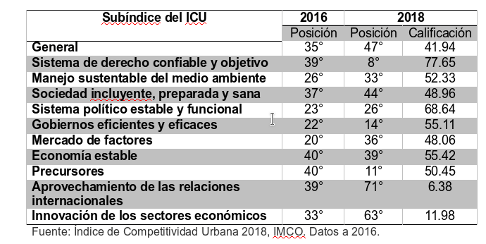

El Índice de Competitividad Urbana (ICU) 2018, elaborado por el Instituto Mexicano para la Competitividad (IMCO), mide la capacidad de las ciudades para atraer y retener inversión. El estudio se hace cada dos años y en su versión 2018, utiliza información de 2016.
Con 120 indicadores clasificados en 10 subíndices, el ICU evalúa a 73 ciudades de México compuestas de 363 municipios, ubicándolas en las categorías de competitividad: alta, adecuada, media alta, media baja, baja y muy baja. Dichas ciudades se clasificaron por las proyecciones de población total de sus municipios, formando 4 grupos:
Proyecciones de Población Total
- Ciudades con más de un millón de habitantes
- Ciudades de 500 mil habitantes a un millón de habitantes
- Ciudades de 250 mil a 500 mil habitantes
- Ciudades con menos de 250 mil habitantes
Los subíndices del ICU son los siguientes:
- Sistema de derecho confiable y objetivo
- Manejo sustentable del medio ambiente
- Sociedad incluyente, preparada y sana
- Sistema político estable y funcional
- Gobiernos eficientes y eficaces
- Mercado de factores
- Economía estable
- Precursores
- Aprovechamiento de las relaciones internacionales
- Innovación de los sectores económicos
Posición de La Laguna en el Índice
La Laguna –compuesta por los municipios de Matamoros y Torreón, del Estado de Coahuila, y Gómez Palacio y Lerdo, de Durango- se encuentra en el grupo de ciudades con más de un millón de habitantes junto a otras 14 zonas metropolitanas como Valle de México, Guadalajara, Monterrey, Aguascalientes y León. De acuerdo a una puntuación total de 41.94 sobre 100 en el ICU 2018, La Laguna se considera con competitividad media baja y ocupa el lugar 13 entre las ciudades de su grupo, así como el 47 en el índice general de 73 ciudades.
El Valle de México es el primer lugar tanto en el grupo de ciudades con más de un millón de habitantes como en el ranking general, con puntuación de 55.86. Las mejores calificaciones de La Laguna en el tema de competitividad se obtuvieron en los subíndices de Sistema de derecho confiable y objetivo, Precursores y Gobiernos eficientes y eficaces, en los cuales obtuvo los lugares 8, 11 y 14, respectivamente.
Sistema de derecho confiable y objetivo, mide el entorno de seguridad pública y jurídica, con los indicadores de: Ejecución de contratos, Competencia en servicios notariales, Robo de vehículos, Tasa de homicidios, Percepción de seguridad, Secuestros e Incidencia delictiva.
Precursores, mide a los sectores financiero, de telecomunicaciones y de transporte. Es decir, a los sectores considerados como condiciones necesarias para impulsar el crecimiento económico, la inversión y la generación de empleo. Algunos indicadores del subíndice son: Hogares con computadoras, Hogares con líneas telefónicas móviles, Aerolíneas, Sistema de transporte masivo, Presupuesto destinado a transporte público (no motorizado), Tiempos de traslado y Acceso a servicios financieros.
Gobiernos eficientes y eficaces, mide la capacidad del gobierno municipal para influir en la competitividad de la ciudad, en su desarrollo económico y formalidad de la economía. Los indicadores que de eficiencia del gobierno son: Ingresos propios, Esfuerzos de mejora regulatoria, Apertura de un negocio, Áreas verdes urbanas per cápita, Cambio en empleados del sector formal, Crecimiento de la mancha urbana y Mujeres en la administración municipal, entre otros. Los índices con calificación más baja para La Laguna fueron Aprovechamiento de las relaciones internacionales, Innovación de los sectores económicos y Sociedad incluyente, preparada y sana, con las posiciones 71°, 63° y 44°.
Aprovechamiento de las relaciones internacionales, mide el grado con el cual las ciudades capitalizan sus lazos con el exterior para elevar su competitividad. Los indicadores del subíndice son: Inversión extranjera directa neta, Flujo de pasajeros del o hacia el extranjero, Oferta hotelera de 4 y 5 estrellas, Ocupación hotelera, Sitios UNESCO y Ciudad fronteriza o portuaria.
Innovación de los sectores económicos, mide la capacidad de las ciudades para competir con éxito en la economía, particularmente en sectores de alto valor agregado, intensivos en conocimiento y tecnología de punta. Los indicadores son: Empresas, Grandes Empresas, Productividad total de los factores, Posgrados de calidad, Centros de investigación, Investigadores, Patentes.
Sociedad incluyente, preparada y sana, mide la calidad de vida de los habitantes a través de la educación, salud e inclusión. Es decir, evalúa las oportunidades que existen para formar, atraer y aprovechar el capital humano de una ciudad. Este subíndice es el de mayor número de indicadores, algunos de ellos son: Espacios culturales, Universidades de calidad, Diferencias de género en la fuerza laboral, Equidad salarial, Mujeres que estudian, Personas por debajo de la línea de bienestar, Camas de hospital y Acceso a instituciones de salud.
Comparación con 2016
En el ICU 2016, el cual se realizó con información de 2014, La Laguna ocupó el lugar 24, con competitividad media alta. Esta vez, como cada año, el IMCO recalculó los resultados de los índices pasados para garantizar la comparabilidad entre un año y otro. Es por esto, que la posición de La Laguna cambió a 35 y bajó 12 posiciones en dos años con respecto a la nueva medición. La Laguna ocupa el lugar 47 en el ICU 2018.
A continuación el cambio en posición para cada subíndice del 2016 al 2018:

Observaciones:
IMCO cambió de metodología y recalculó los resultados de los índices pasados.
Por primera vez, el municipio de Francisco I. Madero fue tomado en cuenta en el caso de estudio de La Laguna; Sin embargo, al calcular los indicadores, no se utilizó información de Francisco I. Madero.
Saltillo obtuvo el primer lugar general en tres subíndices: Derecho, Gobiernos y Economía.
Los indicadores de Innovación son difíciles de calcular para el municipio. IMCO pone las patentes a nivel estado. En el caso de La Laguna, tomó en cuenta las de Coahuila y Durango.
En el indicador de Escuelas de calidad del índice de Sociedad incluyente, preparada y sana nos ponen un cero, cuando sí hay 2 instituciones de educación superior contenidas en el ranking 300 mejores universidades de América Latina.
La Laguna es el segundo lugar en el subíndice de Derecho entre las ciudades con más de un millón de habitantes La Laguna es el cuarto lugar en el subíndice de Sistema político entre las ciudades de más con un millón de habitantes La Laguna es el cuarto lugar en el subíndice de precursores, entre las ciudades de más de con millón de habitantes La Laguna es el último lugar en el subíndice de relaciones internacionales, entre las ciudades con más de un millón de habitantes
Dentro del grupo de ciudades con más de un millón de habitantes, La Laguna es la mejor calificada en los siguientes indicadores: Viviendas intraurbanas: 73% de las viviendas en La Laguna están en los primeros polígonos de contención de la ciudad. Producto medio del trabajo: en La Laguna producen en promedio 289.33 pesos por hora trabajada.
Personas con ingresos mayores al promedio de la ciudad: 25.05% de la población ocupada de La Laguna gana salario superior al promedio. Tiempos de traslado: 82.78% de las personas llega a su escuela o trabajo en menos de 30 minutos.